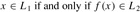

|
|
< Day Day Up > |
|
Perhaps the most compelling reason why theoretical computer scientists believe that P ≠ NP is the existence of the class of "NP-complete" problems. This class has the surprising property that if any NP-complete problem can be solved in polynomial time, then every problem in NP has a polynomial-time solution, that is, P = NP. Despite years of study, though, no polynomial-time algorithm has ever been discovered for any NP-complete problem.
The language HAM-CYCLE is one NP-complete problem. If we could decide HAM-CYCLE in polynomial time, then we could solve every problem in NP in polynomial time. In fact, if NP - P should turn out to be nonempty, we could say with certainty that HAM-CYCLE ∈ NP - P.
The NP-complete languages are, in a sense, the "hardest" languages in NP. In this section, we shall show how to compare the relative "hardness" of languages using a precise notion called "polynomial-time reducibility." Then we formally define the NP-complete languages, and we finish by sketching a proof that one such language, called CIRCUIT-SAT, is NP-complete. In Sections 34.4 and 34.5, we shall use the notion of reducibility to show that many other problems are NP-complete.
Intuitively, a problem Q can be reduced to another problem Q′ if any instance of Q can be "easily rephrased" as an instance of Q′, the solution to which provides a solution to the instance of Q. For example, the problem of solving linear equations in an indeterminate x reduces to the problem of solving quadratic equations. Given an instance ax + b = 0, we transform it to 0x2 + ax + b = 0, whose solution provides a solution to ax + b = 0. Thus, if a problem Q reduces to another problem Q′, then Q is, in a sense, "no harder to solve" than Q′.
Returning to our formal-language framework for decision problems, we say that a language L1 is polynomial-time reducible to a language L2, written L1 ≤P L2, if there exists a polynomial-time computable function f : {0, 1}* → {0,1}* such that for all x {0, 1}*,
| (34.1) |  |
We call the function f the reduction function, and a polynomial-time algorithm F that computes f is called a reduction algorithm.
Figure 34.4 illustrates the idea of a polynomial-time reduction from a language L1 to another language L2. Each language is a subset of {0, 1}*. The reduction function f provides a polynomial-time mapping such that if x ∈ L1, then f(x) ∈ L2. Moreover, if x ∉ L1, then f (x) ∉ L2. Thus, the reduction function maps any instance x of the decision problem represented by the language L1 to an instance f (x) of the problem represented by L2. Providing an answer to whether f(x) ∈ L2 directly provides the answer to whether x ∈ L1.
Polynomial-time reductions give us a powerful tool for proving that various languages belong to P.
If L1, L2 ⊆ {0,1}* are languages such that L1 ≤P L2, then L2 ∈ P implies L1 P.
Proof Let A2 be a polynomial-time algorithm that decides L2, and let F be a polynomial-time reduction algorithm that computes the reduction function f. We shall construct a polynomial-time algorithm A1 that decides L1.
Figure 34.5 illustrates the construction of A1. For a given input x ∈ {0, 1}*, the algorithm A1 uses F to transform x into f (x), and then it uses A2 to test whether f(x) L2. The output of A2 is the value provided as the output from A1.
The correctness of A1 follows from condition (34.1). The algorithm runs in polynomial time, since both F and A2 run in polynomial time (see Exercise 34.1-5).
Polynomial-time reductions provide a formal means for showing that one problem is at least as hard as another, to within a polynomial-time factor. That is, if L1 ≤P L2, then L1 is not more than a polynomial factor harder than L2, which is why the "less than or equal to" notation for reduction is mnemonic. We can now define the set of NP-complete languages, which are the hardest problems in NP.
A language L ⊆ {0, 1}* is NP-complete if
L ∈ NP, and
L′ ≤P L for every L∈ NP.
If a language L satisfies property 2, but not necessarily property 1, we say that L is NP-hard. We also define NPC to be the class of NP-complete languages.
As the following theorem shows, NP-completeness is at the crux of deciding whether P is in fact equal to NP.
If any NP-complete problem is polynomial-time solvable, then P = NP. Equivalently, if any problem in NP is not polynomial-time solvable, then no NP-complete problem is polynomial-time solvable.
Proof Suppose that L ∈ P and also that L ∈ NPC. For any L′ ∈ NP, we have L′ ≤P L by property 2 of the definition of NP-completeness. Thus, by Lemma 34.3, we also have that L′ ∈ P, which proves the first statement of the theorem.
To prove the second statement, note that it is the contrapositive of the first statement.
It is for this reason that research into the P ≠ NP question centers around the NP-complete problems. Most theoretical computer scientists believe that P ≠ NP, which leads to the relationships among P, NP, and NPC shown in Figure 34.6. But, for all we know, someone may come up with a polynomial-time algorithm for an NP-complete problem, thus proving that P = NP. Nevertheless, since no polynomial-time algorithm for any NP-complete problem has yet been discovered, a proof that a problem is NP-complete provides excellent evidence for its intractability.
We have defined the notion of an NP-complete problem, but up to this point, we have not actually proved that any problem is NP-complete. Once we prove that at least one problem is NP-complete, we can use polynomial-time reducibility as a tool to prove the NP-completeness of other problems. Thus, we now focus on demonstrating the existence of an NP-complete problem: the circuit-satisfiability problem.
Unfortunately, the formal proof that the circuit-satisfiability problem is NP-complete requires technical detail beyond the scope of this text. Instead, we shall informally describe a proof that relies on a basic understanding of boolean combinational circuits.
Boolean combinational circuits are built from boolean combinational elements that are interconnected by wires. A boolean combinational element is any circuit element that has a constant number of boolean inputs and outputs and that performs a well-defined function. Boolean values are drawn from the set {0, 1}, where 0 represents FALSE and 1 represents TRUE.
The boolean combinational elements that we use in the circuit-satisfiability problem compute a simple boolean function, and they are known as logic gates. Figure 34.7 shows the three basic logic gates that we use in the circuit-satisfiability problem: the NOT gate (or inverter), the AND gate, and the OR gate. The NOT gate takes a single binary input x, whose value is either 0 or 1, and produces a binary output z whose value is opposite that of the input value. Each of the other two gates takes two binary inputs x and y and produces a single binary output z.
The operation of each gate, and of any boolean combinational element, can be described by a truth table, shown under each gate in Figure 34.7. A truth table gives the outputs of the combinational element for each possible setting of the inputs. For example, the truth table for the OR gate tells us that when the inputs are x = 0 and y = 1, the output value is z = 1. We use the symbols ¬ to denote the NOT function, ∧ to denote the AND function, and ∨ to denote the OR function. Thus, for example, 0 ∨ = 1.
We can generalize AND and OR gates to take more than two inputs. An AND gate's output is 1 if all of its inputs are 1, and its output is 0 otherwise. An OR gate's output is 1 if any of its inputs are 1, and its output is 0 otherwise.
A boolean combinational circuit consists of one or more boolean combinational elements interconnected by wires. A wire can connect the output of one element to the input of another, thereby providing the output value of the first element as an input value of the second. Figure 34.8 shows two similar boolean combinational circuits; they differ in only one gate. Part (a) of the figure also shows the values on the individual wires, given the input 〈x1 = 1, x2 = 1, x3 = 0〉. Although a single wire may have no more than one combinational-element output connected to it, it can feed several element inputs. The number of element inputs fed by a wire is called the fan-out of the wire. If no element output is connected to a wire, the wire is a circuit input, accepting input values from an external source. If no element input is connected to a wire, the wire is a circuit output, providing the results of the circuit's computation to the outside world. (An internal wire can also fan out to a circuit output.) For the purpose of defining the circuit-satisfiability problem, we limit the number of circuit outputs to 1, though in actual hardware design, a boolean combinational circuit may have multiple outputs.
Boolean combinational circuits contain no cycles. In other words, suppose we create a directed graph G = (V, E) with one vertex for each combinational element and with k directed edges for each wire whose fan-out is k; there is a directed edge (u, v) if a wire connects the output of element u to an input of element v. Then G must be acyclic.
A truth assignment for a boolean combinational circuit is a set of boolean input values. We say that a one-output boolean combinational circuit is satisfiable if it has a satisfying assignment: a truth assignment that causes the output of the circuit to be 1. For example, the circuit in Figure 34.8(a) has the satisfying assignment 〈x1 = 1, x2 = 1, x3 = 0〉, and so it is satisfiable. As Exercise 34.3-1 asks you to show, no assignment of values to x1, x2, and x3 causes the circuit in Figure 34.8(b) to produce a 1 output; it always produces 0, and so it is unsatisfiable.
The circuit-satisfiability problem is, "Given a boolean combinational circuit composed of AND, OR, and NOT gates, is it satisfiable?" In order to pose this question formally, however, we must agree on a standard encoding for circuits. The size of a boolean combinational circuit is the number of boolean combinational elements plus the number of wires in the circuit. One can devise a graphlike encoding that maps any given circuit C into a binary string 〈C〉 whose length is polynomial in the size of the circuit itself. As a formal language, we can therefore define
CIRCUIT-SAT = {〈C〉 : C is a satisfiable boolean combinational circuit}.
The circuit-satisfiability problem arises in the area of computer-aided hardware optimization. If a subcircuit always produces 0, that subcircuit can be replaced by a simpler subcircuit that omits all logic gates and provides the constant 0 value as its output. It would be helpful to have a polynomial-time algorithm for this problem.
Given a circuit C, we might attempt to determine whether it is satisfiable by simply checking all possible assignments to the inputs. Unfortunately, if there are k inputs, there are 2k possible assignments. When the size of C is polynomial in k, checking each one takes Ω(2k) time, which is superpolynomial in the size of the circuit.[7] In fact, as has been claimed, there is strong evidence that no polynomial-time algorithm exists that solves the circuit-satisfiability problem because circuit satisfiability is NP-complete. We break the proof of this fact into two parts, based on the two parts of the definition of NP-completeness.
The circuit-satisfiability problem belongs to the class NP.
Proof We shall provide a two-input, polynomial-time algorithm A that can verify CIRCUIT-SAT. One of the inputs to A is (a standard encoding of) a boolean combinational circuit C. The other input is a certificate corresponding to an assignment of boolean values to the wires in C. (See Exercise 34.3-4 for a smaller certificate.)
The algorithm A is constructed as follows. For each logic gate in the circuit, it checks that the value provided by the certificate on the output wire is correctly computed as a function of the values on the input wires. Then, if the output of the entire circuit is 1, the algorithm outputs 1, since the values assigned to the inputs of C provide a satisfying assignment. Otherwise, A outputs 0.
Whenever a satisfiable circuit C is input to algorithm A, there is a certificate whose length is polynomial in the size of C and that causes A to output a 1. When-ever an unsatisfiable circuit is input, no certificate can fool A into believing that the circuit is satisfiable. Algorithm A runs in polynomial time: with a good implementation, linear time suffices. Thus, CIRCUIT-SAT can be verified in polynomial time, and CIRCUIT-SAT ∈ NP.
The second part of proving that CIRCUIT-SAT is NP-complete is to show that the language is NP-hard. That is, we must show that every language in NP is polynomial-time reducible to CIRCUIT-SAT. The actual proof of this fact is full of technical intricacies, and so we shall settle for a sketch of the proof based on some understanding of the workings of computer hardware.
A computer program is stored in the computer memory as a sequence of instructions. A typical instruction encodes an operation to be performed, addresses of operands in memory, and an address where the result is to be stored. A special memory location, called the program counter, keeps track of which instruction is to be executed next. The program counter is automatically incremented whenever an instruction is fetched, thereby causing the computer to execute instructions sequentially. The execution of an instruction can cause a value to be written to the program counter, however, and then the normal sequential execution can be altered, allowing the computer to loop and perform conditional branches.
At any point during the execution of a program, the entire state of the computation is represented in the computer's memory. (We take the memory to include the program itself, the program counter, working storage, and any of the various bits of state that a computer maintains for bookkeeping.) We call any particular state of computer memory a configuration. The execution of an instruction can be viewed as mapping one configuration to another. Importantly, the computer hardware that accomplishes this mapping can be implemented as a boolean combinational circuit, which we denote by M in the proof of the following lemma.
The circuit-satisfiability problem is NP-hard.
Proof Let L be any language in NP. We shall describe a polynomial-time algorithm F computing a reduction function f that maps every binary string x to a circuit C = f (x) such that x ∈ L if and only if C ∈ CIRCUIT-SAT. Since L NP, there must exist an algorithm A that verifies L in polynomial time. The algorithm F that we shall construct will use the two-input algorithm A to compute the reduction function f .
Let T(n) denote the worst-case running time of algorithm A on length-n input strings, and let k ≥ 1 be a constant such that T (n) = O(nk) and the length of the certificate is O(nk). (The running time of A is actually a polynomial in the total input size, which includes both an input string and a certificate, but since the length of the certificate is polynomial in the length n of the input string, the running time is polynomial in n.)
The basic idea of the proof is to represent the computation of A as a sequence of configurations. As shown in Figure 34.9, each configuration can be broken into parts consisting of the program for A, the program counter and auxiliary machine state, the input x, the certificate y, and working storage. Starting with an initial configuration c0, each configuration ci is mapped to a subsequent configuration ci+1 by the combinational circuit M implementing the computer hardware. The output of the algorithm A-0 or 1-is written to some designated location in the working storage when A finishes executing, and if we assume that thereafter A halts, the value never changes. Thus, if the algorithm runs for at most T(n) steps, the output appears as one of the bits in cT (n).
The reduction algorithm F constructs a single combinational circuit that computes all configurations produced by a given initial configuration. The idea is to paste together T(n) copies of the circuit M. The output of the ith circuit, which produces configuration ci, is fed directly into the input of the (i +1)st circuit. Thus, the configurations, rather than ending up in a state register, simply reside as values on the wires connecting copies of M.
Recall what the polynomial-time reduction algorithm F must do. Given an input x, it must compute a circuit C = f(x) that is satisfiable if and only if there exists a certificate y such that A(x, y) = 1. When F obtains an input x, it first computes n = |x| and constructs a combinational circuit C′ consisting of T(n) copies of M. The input to C′ is an initial configuration corresponding to a computation on A(x, y), and the output is the configuration cT(n).
The circuit C = f(x) that F computes is obtained by modifying C′ slightly. First, the inputs to C′ corresponding to the program for A, the initial program counter, the input x, and the initial state of memory are wired directly to these known values. Thus, the only remaining inputs to the circuit correspond to the certificate y. Second, all outputs to the circuit are ignored, except the one bit of cT(n) corresponding to the output of A. This circuit C, so constructed, computes C(y) = A(x, y) for any input y of length O(nk). The reduction algorithm F, when provided an input string x, computes such a circuit C and outputs it.
Two properties remain to be proved. First, we must show that F correctly computes a reduction function f . That is, we must show that C is satisfiable if and only if there exists a certificate y such that A(x, y) = 1. Second, we must show that F runs in polynomial time.
To show that F correctly computes a reduction function, let us suppose that there exists a certificate y of length O(nk) such that A(x, y) = 1. Then, if we apply the bits of y to the inputs of C, the output of C is C(y) = A(x, y) = 1. Thus, if a certificate exists, then C is satisfiable. For the other direction, suppose that C is satisfiable. Hence, there exists an input y to C such that C(y) = 1, from which we conclude that A(x, y) = 1. Thus, F correctly computes a reduction function.
To complete the proof sketch, we need only show that F runs in time polynomial in n = |x|. The first observation we make is that the number of bits required to represent a configuration is polynomial in n. The program for A itself has constant size, independent of the length of its input x. The length of the input x is n, and the length of the certificate y is O(nk). Since the algorithm runs for at most O(nk) steps, the amount of working storage required by A is polynomial in n as well. (We assume that this memory is contiguous; Exercise 34.3-5 asks you to extend the argument to the situation in which the locations accessed by A are scattered across a much larger region of memory and the particular pattern of scattering can differ for each input x.)
The combinational circuit M implementing the computer hardware has size polynomial in the length of a configuration, which is polynomial in O(nk) and hence is polynomial in n. (Most of this circuitry implements the logic of the memory system.) The circuit C consists of at most t = O(nk) copies of M, and hence it has size polynomial in n. The construction of C from x can be accomplished in polynomial time by the reduction algorithm F, since each step of the construction takes polynomial time.
The language CIRCUIT-SAT is therefore at least as hard as any language in NP, and since it belongs to NP, it is NP-complete.
The circuit-satisfiability problem is NP-complete.
Proof Immediate from Lemmas 34.5 and 34.6 and from the definition of NP-completeness.
Show that the ≤P relation is a transitive relation on languages. That is, show that if L1 ≤P L2 and L2 ≤P L3, then L1 ≤P L3.
Show that a satisfying assignment can be used as a certificate in an alternative proof of Lemma 34.5. Which certificate makes for an easier proof?
The proof of Lemma 34.6 assumes that the working storage for algorithm A occupies a contiguous region of polynomial size. Where in the proof is this assumption exploited? Argue that this assumption does not involve any loss of generality.
A language L is complete for a language class C with respect to polynomial-time reductions if L ∈ C and L′ ≤P L for all L′ ∈ C. Show that Ø and {0,1}* are the only languages in P that are not complete for P with respect to polynomial-time reductions.
The reduction algorithm F in the proof of Lemma 34.6 constructs the circuit C = f(x) based on knowledge of x, A, and k. Professor Sartre observes that the string x is input to F, but only the existence of A, k, and the constant factor implicit in the O(nk) running time is known to F (since the language L belongs to NP), not their actual values. Thus, the professor concludes that F can't possibly construct the circuit C and that the language CIRCUIT-SAT is not necessarily NP-hard. Explain the flaw in the professor's reasoning.
[7]On the other hand, if the size of the circuit C is Θ(2k), then an algorithm whose running time is O(2k) has a running time that is polynomial in the circuit size. Even if P ≠ NP, this situation would not contradict the fact that the problem is NP-complete; the existence of a polynomial-time algorithm for a special case does not imply that there is a polynomial-time algorithm for all cases.
|
|
< Day Day Up > |
|